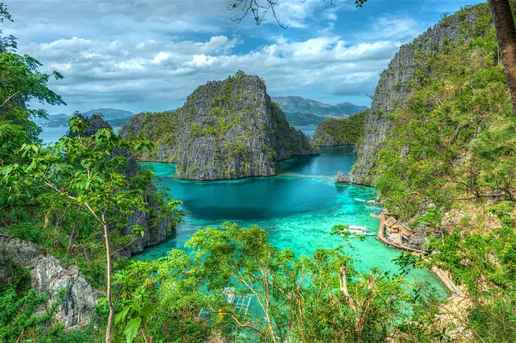
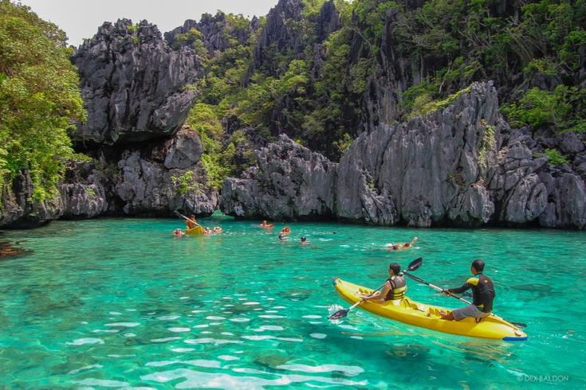
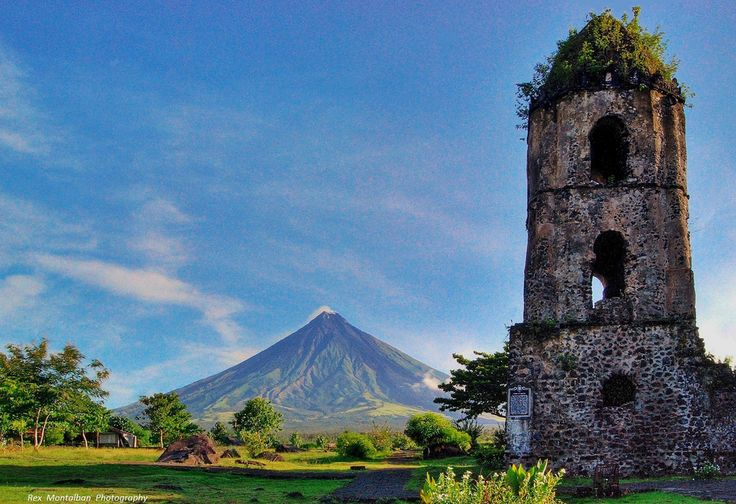
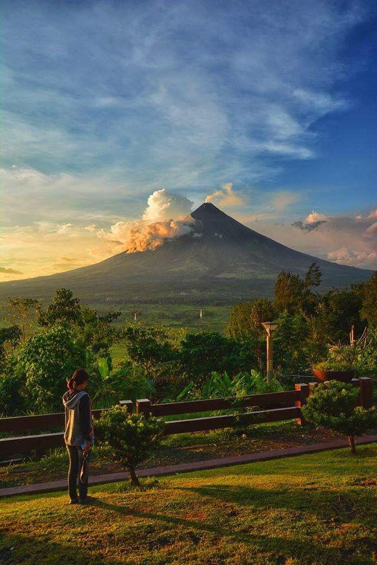
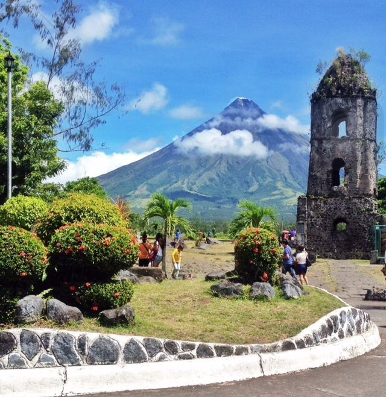
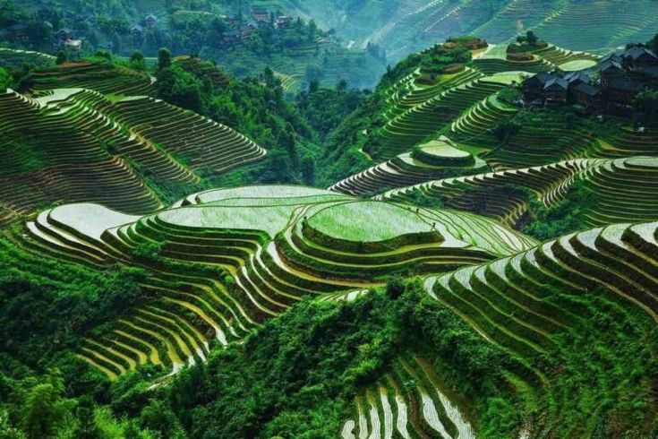
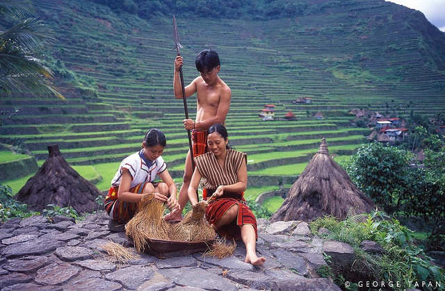
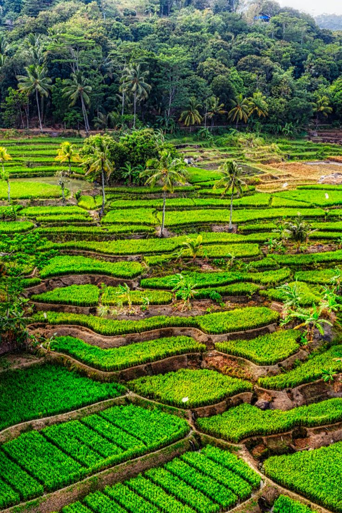

PHILIPPINES
The Philippines has over 7,000 islands and is the perfect getaway to experience a mix of nature, culture, and fun.
The geographical features of the Philippines ensure that there are natural attractions wherever you go.
Whether you're headed to Luzon tourist spots, Visayas tourist spots, or Mindanao tourist spots, expect beautiful sights, unique attractions, friendly locals, and memorable experiences.
 

Nacpan Beach, El Nido
El Nido in Palawan is most famous for its paradise-like islands and lagoons, but a 45-minute ride from its main town takes you to another idyllic destination:
Nacpan Beach. Island hopping escapades in El Nido, including a visit to El Nido Big Lagoon and other top Palawan beaches should not be missed.
But after a jam-packed day of visiting coves, white-sand beaches in El Nido, limestone cliffs, and other El Nido Palawan tourist spots, a trip to relaxing Nacpan Beach is highly recommended.
  
Mayon Volcano, Albay, Bicol
One of the top natural landmarks in the Philippines and one of the most-visited tourist spots in Albay, it is already a wonderful experience seeing the volcano from afar.
But if you are an adrenaline junkie, you can soak up all its beauty while gliding through a zipline in Lignon Hill or going on a Mayon Volcano tour via a Mayon ATV ride in Bicol.
Visit the Cagsawa Ruins for another unique and historic viewing point of the Mayon Volcano. As a bonus, from Legazpi, you can take a side trip to Donsol,
where you can enjoy swimming with whale sharks in their natural habitat.
  
Banaue Rice Terraces, Ifugao
Hand-chiseled some 2,000 years ago, the Banaue Rice Terraces in Banaue of Ifugao, North Luzon, is a remarkable destination and is truly one of the most beautiful places in the Philippines and regarded as one of the Philippines' iconic landmarks.
Sit in a colorful jeepney as it cruises along winding roads in Banaue, and views of dramatic mud-walled rice terraces leave you in awe.
The Ifugao people were highly skilled in carving both wood and mountainsides. The Banaue Rice Terraces is listed as a UNESCO World Heritage Site.
It offers spectacular views of emerald hues during the rice-growing seasons of April-May and October-November.
Banaue and its many natural attractions may pack a lot of tourists so you can make your way further to quieter Batad Rice Terraces and take a quick dip at its mighty Tappiya waterfalls.
You can also explore nearby Baguio City or pick fresh strawberries in La Trinidad, Benguet.